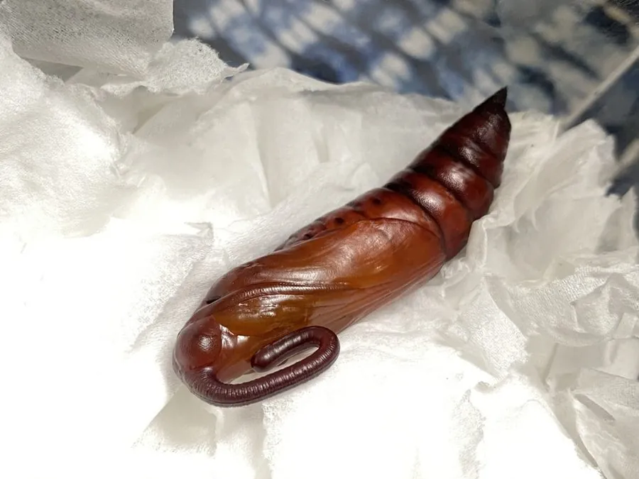

昆虫 · 动物界
白薯天蛾 Agrius convolvuli

翅面灰褐、腹部有粉红与黑色横带的大型天蛾，迁飞能力强，幼虫取食甘薯和旋花，是薯区常见害虫。
- 分类
- 门节肢动物门纲昆虫纲目鳞翅目科天蛾科属甘薯天蛾属
- 栖息环境
- 农田、菜地、村落和灌丛，甘薯与旋花科植物附近
- 地理分布
- 旧大陆广布，自欧洲南部、非洲、南亚至东亚和澳大利亚，中国各地可见
- 保护级别
- 尚无保护级别；为甘薯产区的重要害虫
物种志
白薯天蛾的翅展约八至十厘米，前翅灰褐色，密布黑色与灰白色的波状细纹，后翅淡灰褐色，有深色横带。它的腹部粗壮，两侧有粉红色与黑色相间的横带，像一圈圈束带，停歇时腹部常露在翅外，十分显眼。触角细长，雌蛾腹部更肥大。成虫善于飞行，能在空中悬停，把长长的口器伸进花冠吸蜜。
它广布于旧大陆，从欧洲南部、非洲、南亚一直到东亚和澳大利亚，在中国各地都可见到，栖息在农田、菜地、村落和灌丛，成虫夜间活动，有很强的迁飞能力，能随季风长距离移动。幼虫以甘薯、旋花、蕹菜等旋花科植物为食，卵单产于叶片背面，幼虫取食叶片，食量很大，化蛹于土中，一年发生二至四代，以蛹越冬。它是甘薯产区的重要害虫，尚无保护级别，防治以灯光诱杀和农业措施为主。
形态与习性
- 翅展约八至十厘米，前翅灰褐有波状细纹
- 腹部粉红与黑色相间的横带，停歇时外露
- 食性幼虫取食甘薯、旋花、蕹菜等旋花科植物
- 迁飞成虫迁飞能力强，可随季风长距离移动
- 取食成虫悬停空中，以长口器吸蜜
- 发生世代一年二至四代，以蛹在土中越冬
趣味知识
- 它腹部的粉红黑带像一圈圈缠上去的束带，飞起来格外显眼。
- 成虫能悬停在花前，把长长的口器探进花冠吸蜜。
- 它的迁飞本领很强，能跟着季风跨过很远的距离。